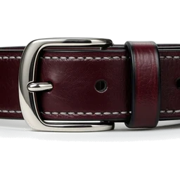

Leather
Black pebble-grain leather, saddle stitching and nickel studs, with a blood-red accent. Ratings are pyramid studs, the favourite is a collar, and every card is sewn shut.

PaletteBlack leather and nickel hardware carry almost everything. Blood red marks what is chosen, active or hers, and oxblood is the pressed and deeper version of it. Thread is a warm bone grey that turns red on hover.
Type
Grenze Gotisch is a blackletter drawn to stay readable, so it carries the wordmark, section and card titles and her lines. Oswald in letterspaced caps carries buttons, tags, tabs and labels. Descriptions and settings stay on the system font. Both fonts ship inside the plugin.
Gear and glyphs
The gear is rendered as catalogue product shots in black leather, oxblood and nickel, then cut out so it sits on any leather: the studded collar, the strap and roller buckle, the flogger, the O-ring junction of a harness and the studded paddle. They were rendered locally with Qwen-Image 2512 (Apache 2.0). The collar ships with the theme for empty lists; the rest appear on this page only. The flat glyphs are CSS masks, so they take any fill.
Buttons
Buttons are dyed leather with an inner saddle stitch. Primary is blood-red leather with a nickel rivet at each end, secondary is black leather, and the others are cognac, bottle green and steel dyes. Pressing debosses the leather, and the chosen item of a group is pressed into oxblood.
Tags, ratings and favourites
Tags are small leather tags with a nickel eyelet. A rating is a row of pyramid studs set over punched grommets, the favourite is a studded collar that turns blood red, and the O counter is a flogger. Click them and studs, O-rings and sparks fly off.
Cards
Cards are pebble-grain leather with the picture set in like a window and a saddle stitch round the edge. Scene cards carry a studded strap across the top, and on hover they lift, the thread turns red and light runs across the studs. Performers wear a collar with a hanging O-ring. The rating is a leather tab with a stud.
Forms and menus
Inputs are debossed into the leather, and focus runs a red stitch round the field. Menus, tooltips and toasts are stitched leather. A modal carries a strap and roller buckle under its title.
Stash-box
Tagger rows stay flat, since you clear hundreds of them. The chosen row gets a blood-red edge and the chosen select a red ring and stitch. StashID links are a nickel tag with the ID on leather.
-
Studio: Black SaddleBlack Saddle▾Performer: Velvet RivetSelect Performer▾Performer: Onyx Buckle Matched: Onyx Buckle
-
Black Hide
Nickel Lane · 2026-02-14
Navigation
The navbar is a wide strap with a row of studs along its edge, and the active page is a blood-red patch stitched onto it. On a phone held upright Stash docks the bar at the bottom, and the studs move to its top edge. Tabs are leather flaps with a red edge, and Stash's pagination is a row of leather buttons.
Loading and empty
The loader is three pyramid studs that light up in turn. An empty list shows the collar and a short order, or an O-ring and no line in SFW mode.
Loading…
Copy
Short orders in her voice. Matches are exact and whole-text, so titles, tags and descriptions are never touched. Plain labels and Stash's SFW mode turn them off.
| Stash says | Leather says |
|---|